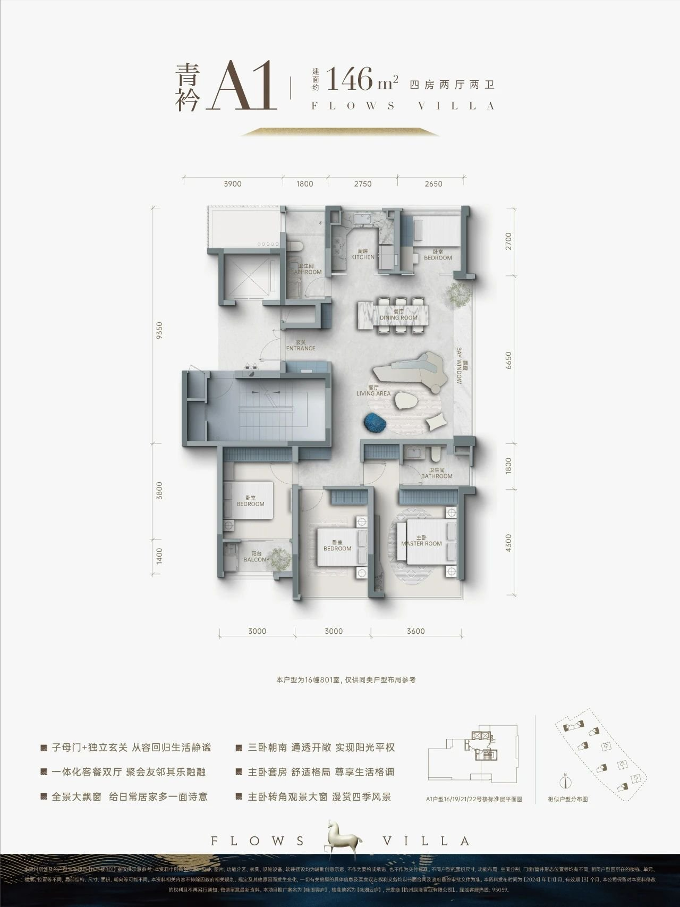
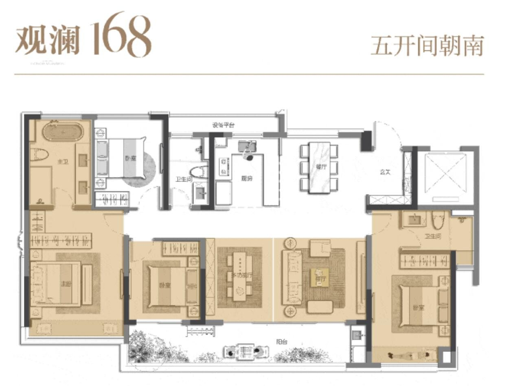
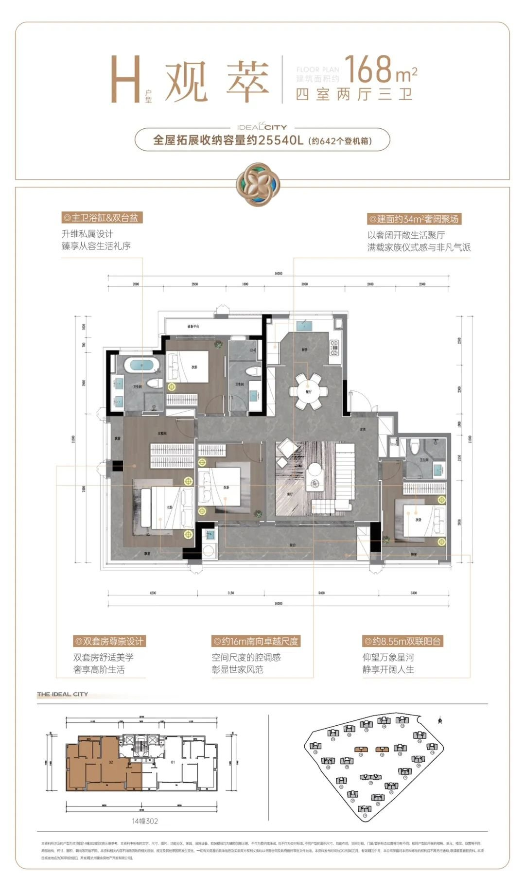
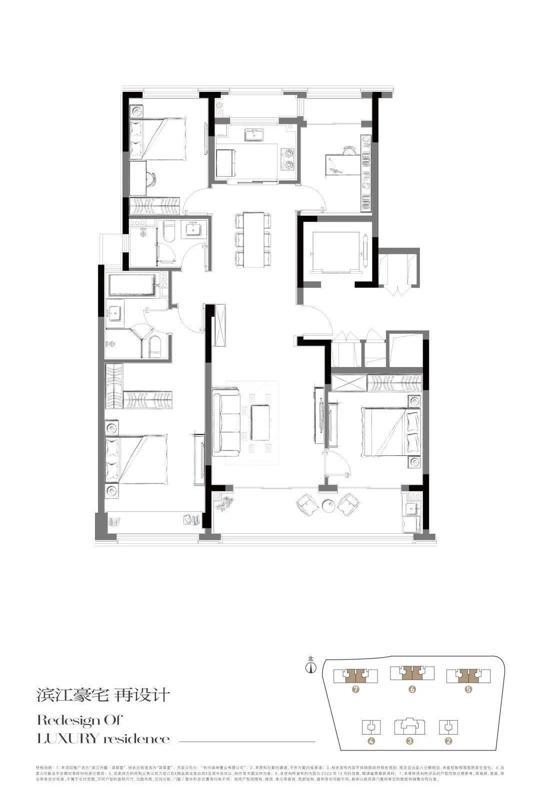

北厅补充（2026-10-30）
事实新增 北厅（江景） 页：共 9 例北厅户型图（140–150 段 4、155–170 段 3、185 段 2）；只有 N1 已证实两梯两户，其余梯户比未核实。另列 3 条梯户比未核实或年份偏早的线索。推断近两年江浙沪北厅大多出现在“北侧临江/湖”的楼栋，并且多是 140㎡ 以上的边套。
先说结论（本版已按新标准重做）
- 事实成都案例已移出（存档在
_archive-成都/，不再链接）。只收江浙沪，且梯户比必须有出处，证实是一梯两户或两梯两户；两梯三户、两梯四户以及无法核实的一律剔除。 - 事实通过的只有 7 例（6 例带图）：120㎡ 1 例、130㎡ 0 例、148㎡ 3 例、168㎡ 3 例。城市以杭州为主，另有苏州 1 例。
- 推断在大城市的高层盘里，120–130㎡ 多半是两梯三户或两梯四户（如鸣澜里 120、云杭里 127、荷语江山府 129），两梯两户一般只给 139㎡ 以上的边套或楼王。所以 120–130 段很难找到“已证实两梯两户”的近两年案例。龙游 FAR 1.6 做小高层/洋房，反而容易做到全盘两梯两户/一梯两户，这本身就是卖点。
- 未知得房率：只有 J1 云杭里 119 有套内面积（约 89%）；其余是开发商或项目口径，或者未核实。
- 建议可借鉴的点：120 做“三房+灵动书房 + 6m 边厅 + 独立电梯前厅”（J1）；148 做“子母门玄关 + 14m 四开间 + LDK”（J2）；168 做“五开间朝南 + 双套房 + 中西厨 + 约 7.35m 方厅”（J5/J7）；收纳指标化（J6 约 25,540L）可直接写进任务书。
龙游语境
事实A-12-03A 地块 FAR 1.0–1.6（按 1.6），定位衢江畔低密改善（见 01）。事实浙江新面积计算规程 2025-06-01 起施行：计半阳台上限为套内 9%，结构高度＜2.2m 的飘窗不计面积，套内≥140㎡ 可设 7㎡ 设备平台（潮新闻 2025-06-18），龙游同样适用。
各面积段数量
| 面积段 | 收录 | 带图 |
|---|---|---|
| 约120㎡ · 三房半优先 · 两梯两户 | 1 | 1 |
| 约130㎡ · 四房 · 一梯两户/两梯两户 | 0 | 0 |
| 约148㎡ · 四房 · 一梯两户/两梯两户 | 3 | 2 |
| 约168㎡ · 四房 · 一梯两户/两梯两户 | 3 | 3 |
汇总
| 编号 | 面积段 | 项目/户型 | 城市 | 梯户 | 图 |
|---|---|---|---|---|---|
| J1 | 120 | 滨江·云杭里 A“云舒” | 杭 | 事实两梯两户，纯板无连廊，独立电梯前厅（搜狐 2026；看房网问答 2026-03-20） | 有 |
| J2 | 148 | 绿城·咏湖雲庐 A2“银鞍” | 杭（滨江白马湖） | 事实小高层两梯两户（看房网点评 2025-02） | 有 |
| J3 | 148 | 绿城·咏湖雲庐 A1“青衿” | 杭（滨江白马湖） | 事实小高层两梯两户（同上） | 有 |
| J4 | 148 | 招商·臻和璟园 143㎡ | 苏（园区车坊） | 事实1梯2户，8–10F洋房，层高2.90m（搜狐焦点） | 无 |
| J5 | 168 | 中交·荷语江山府 E“观澜” | 杭（临平东湖） | 事实168–189㎡楼王位于西区16F，一梯两户（网易号售楼资料） | 有 |
| J6 | 168 | 和萃·揽悦园 H“观萃” | 杭（临平） | 事实139南厅与168户型为两梯两户小高层（网易号） | 有 |
| J7 | 168 | 绿城·咏湖雲庐 B“轻裘” | 杭（滨江白马湖） | 事实小高层两梯两户（宣传称“类一梯一户”，即两梯两户分设梯厅） | 有 |
江浙沪案例（按面积段）
约120㎡ · 三房半优先 · 两梯两户（1 例）
J1 · 滨江·云杭里 A“云舒”（杭）
| 年份 | 2026（预售/加推 2026） | 面积 | 约119㎡ |
|---|---|---|---|
| 房型 | 三房+灵动书房（三房半） | ||
| 梯户 | 事实两梯两户，纯板无连廊，独立电梯前厅（搜狐 2026；看房网问答 2026-03-20） | ||
| 得房率 | 事实约89%（套内约105.8㎡；销售资料转载，网易号） | ||
亮点：U型明厨约7㎡；约6.2m全景边厅转角窗；主卧套房+步入衣帽；南向三卧约9.1m；全明双卫；转角飘窗不计产权

图/户型来源：https://m.kan3721.com/huxing2566-44012.html（2026-03-20）；图右下有小“豆包AI生成”角标（转载站加）
约130㎡ · 四房 · 一梯两户/两梯两户（0 例）
本面积段暂无同时满足“2024–2026 + 一梯两户/两梯两户（已核实）+ 合格户型图”的案例，见“剔除·缺口”。
约148㎡ · 四房 · 一梯两户/两梯两户（3 例）
J2 · 绿城·咏湖雲庐 A2“银鞍”（杭（滨江白马湖））
| 年份 | 2025（土地 2024-07，高层 2025 开盘） | 面积 | 约148㎡ |
|---|---|---|---|
| 房型 | 四房两厅两卫 | ||
| 梯户 | 事实小高层两梯两户（看房网点评 2025-02） | ||
| 得房率 | 未核实 | ||
亮点：子母门+独立玄关；约14.2m南向面宽、四开间朝南；宽U型厨；LDK一体；多功能房；层高3.1m；项目FAR 1.76（与龙游接近）

图/户型来源：https://m.kan3721.com/huxing2554-43837.html（2025-02-20）
J3 · 绿城·咏湖雲庐 A1“青衿”（杭（滨江白马湖））
| 年份 | 2025 | 面积 | 约146㎡ |
|---|---|---|---|
| 房型 | 四房两厅两卫 | ||
| 梯户 | 事实小高层两梯两户（同上） | ||
| 得房率 | 未核实 | ||
亮点：三卧朝南；一体化客餐双厅；全景大飘窗；主卧套房+转角观景

图/户型来源：https://m.kan3721.com/huxing2554-43838.html（2025-02-20）
J4 · 招商·臻和璟园 143㎡（苏（园区车坊））
| 年份 | 2025 | 面积 | 约143㎡ |
|---|---|---|---|
| 房型 | 四房 | ||
| 梯户 | 事实1梯2户，8–10F洋房，层高2.90m（搜狐焦点） | ||
| 得房率 | 事实项目“得房率81%起”（同源，口径未说明） | ||
亮点：低密洋房；南向；与龙游低密洋房形态最接近
未找到≥1000px且无重水印的户型图，仅文字记录。
图/户型来源：https://lyg.focus.cn/zixun/c0e60c98652529d6.html（访问 2026-10-30）；未取到≥1000px户型图，仅文字
约168㎡ · 四房 · 一梯两户/两梯两户（3 例）
J5 · 中交·荷语江山府 E“观澜”（杭（临平东湖））
| 年份 | 2024–2026（西区2027-12交付） | 面积 | 约168㎡ |
|---|---|---|---|
| 房型 | 四房两厅三卫 | ||
| 梯户 | 事实168–189㎡楼王位于西区16F，一梯两户（网易号售楼资料） | ||
| 得房率 | 约84%–87%（同源，开发商口径）未核实 | ||
亮点：图注“五开间朝南”；双套房；中西厨预置；大横厅

图/户型来源：https://m.kan3721.com/huxing2543-43649.html（2024-09-20）
J6 · 和萃·揽悦园 H“观萃”（杭（临平））
| 年份 | 2025（2025-11/12 开盘） | 面积 | 约168㎡ |
|---|---|---|---|
| 房型 | 四室两厅三卫 | ||
| 梯户 | 事实139南厅与168户型为两梯两户小高层（网易号） | ||
| 得房率 | 项目口径约83%未核实 | ||
亮点：主卫浴缸+双台盆；约34㎡奢阔聚场；双套房；约16m南向面宽；约8.55m双联阳台；收纳约25,540L

图/户型来源：https://m.kan3721.com/huxing2560-43933.html（2025-03-01）
J7 · 绿城·咏湖雲庐 B“轻裘”（杭（滨江白马湖））
| 年份 | 2025（二开 2025-02） | 面积 | 约170㎡ |
|---|---|---|---|
| 房型 | 四房两厅三卫 | ||
| 梯户 | 事实小高层两梯两户（宣传称“类一梯一户”，即两梯两户分设梯厅） | ||
| 得房率 | 未核实 | ||
亮点：子母门+独立玄关；约7.35m大方厅融合U厨/岛台/餐客；主卧面宽约3.9m套房，双台盆+浴缸；北书房3.2m；双卧套房

图/户型来源：https://m.kan3721.com/huxing2554-43836.html（2025-02-20）
北厅户型（项目北侧衢江江景）
结论
- 事实北厅案例同样执行“已证实一梯两户/两梯两户”的标准。北厅案例共 9 例、9 张户型图：140–150 段 4、155–170 段 3、185 段 2；其中只有 N1 已证实两梯两户，N2–N9 梯户比标为未核实（按本轮“可放宽”的要求收录）。120 / 130 段 0。
- 推断北厅在江浙沪是少数派：大多数项目宁可放弃北侧景观，也要保客厅朝南。只有“北侧一线江/湖”的楼栋会做北厅，常见做法是“四房朝南 + 北向转角大厅”，面积多在 140㎡ 以上。
- 建议龙游北侧临衢江，建议只在北排一线楼栋做北厅版本：卧室全部朝南保日照，客餐厅一体放北侧，用转角窗或通高玻璃面向江面，面宽≥7m（参照 N1 及线索 N4/N5 建发望江 143 的约 11m 江景面）。南排楼栋仍用 J1–J7 的南厅户型。
- 建议需要关注：北厅冬季没有日照，要靠南侧卧室和阳台补；北向大玻璃要做好保温（参照浙江节能要求）；江面西晒和眩光可用转角挑檐处理。
140–150㎡ 段（4 例，新增）
N2 · 滨江·春风金沙 C1-141（杭州钱塘·金沙湖）
| 年份 | 2019 设计 / 2023 竣工 | 面积 | 约141㎡ |
|---|---|---|---|
| 房型 | 北向宽厅 + 卧室朝南（7幢2单元501，按图）；未核实是不是中间套：图上位置图分辨率太低，看不清 | ||
| 梯户 | 未核实 梯户比未核实（楼盘为高端改善，暂按“可能”收录） | ||
| 得房率 | 事实看房网标注 84%（含赠送），套内约 118㎡ | ||
亮点：北侧湖景宽厅、一步阳台。事实ARCHINA 写明“沿湖楼栋户型采用北向宽厅设计，住户享有北侧湖景与南侧花园”（goa 设计，2019 设计 / 2023 竣工，ARCHINA）

N3 · 滨江·春风金沙 C2-141（杭州钱塘·金沙湖）
| 年份 | 2019 设计 / 2023 竣工 | 面积 | 约141㎡ |
|---|---|---|---|
| 房型 | 北向宽厅 + 卧室朝南（7幢1单元501） | ||
| 梯户 | 未核实 梯户比未核实 | ||
| 得房率 | 事实看房网标注 82%（含赠送），套内约 115.6㎡ | ||
亮点：与 C1 镜像/边套变体。事实ARCHINA 写明“沿湖楼栋户型采用北向宽厅设计，住户享有北侧湖景与南侧花园”（goa 设计，2019 设计 / 2023 竣工，ARCHINA）

N4 · 建发·望江 143㎡ B 户型（温州滨江CBD·瓯江）
| 年份 | 2025–2026 在售 | 面积 | 约143㎡ |
|---|---|---|---|
| 房型 | 四室两厅三卫，北侧瞰景方厅，南向双主套 | ||
| 梯户 | 未核实 官网称“T2 改善”，单元梯户比未核实 | ||
| 得房率 | 未知文中“约113%利用率”是含赠送的使用率，不是得房率 | ||
亮点：事实文中写“东南北三面瞰瓯江”“约 270° 环幕观景”（搜狐 2026-04-21）；约 11m 一线江景面、中西双厨。

图来源：https://www.sohu.com/a/1012271524_121680073（2026-04-21）
N5 · 建发·望江 143㎡ D 户型（温州滨江CBD·瓯江）
| 年份 | 2025–2026 在售 | 面积 | 约143㎡ |
|---|---|---|---|
| 房型 | 四室两厅三卫，北侧转角方厅，南向双主套 | ||
| 梯户 | 未核实 同上 | ||
| 得房率 | 未知（约113%为使用率） | ||
亮点：事实文中写“东南北三面瞰瓯江”“约 270° 环幕观景”（搜狐 2026-04-21）；约 270° 转角观江。

155–170㎡ 段（3 例：N1 + 2 例新增）
N1 · 滨江·湖翠里 D-166（杭州钱塘·金沙湖）
| 年份 | 2023（早于 2024–2026 偏好，作参考） | 面积 | 约166㎡ |
|---|---|---|---|
| 房型 | 四房两厅三卫，北厅 + 四开间朝南 | ||
| 梯户 | 事实项目 5 幢均为两梯两户；北侧沿湖只布置 138㎡ 和 166㎡（搜狐 2023-02） | ||
| 得房率 | 事实看房网标注约 85%（含赠送），套内约 141.8㎡ | ||
亮点：客餐厅放在北侧转角，正面朝金沙湖；四个卧室全部朝南；位于 6 号楼东西边套，评测建议选东边套、7–8 层以上（房叔跑盘 No.119）。
为什么适合北侧江景：推断这是“卧室朝南拿日照、客厅朝北拿景”的标准解法，和龙游北临衢江的条件一致，可以直接作为北排楼栋的原型。

图来源：https://www.sohu.com/a/635511927_667411（2023-02）；同文 C-138 为南厅，B1-130 为中厅；C-138 即下方 N1b 中间套
N1b · 滨江·湖翠里 C-138 中间套（与 N1 同楼：7/6/5 号北排楼的中间两户）
| 年份 | 2023 | 面积 | 约138㎡ |
|---|---|---|---|
| 位置 | 事实图右下角位置图中 7、6、5 号楼的中间两户被标色（边套即 N1 D-166） | ||
| 朝向 | 事实按图中指北针（上为北）：北侧为卧室、厨房和书房，客厅和阳台在南侧，不是北厅（是南厅中间套） | ||
| 梯户 | 事实两梯两户（与 N1 同一来源） | ||
| 得房率 | 未知 | ||
推断湖翠里只把北侧湖景客厅给了边套；中间套靠卧室和书房看湖。龙游北排楼如果中间套也想做北厅，需要另找原型（见下方 N2/N3 的位置说明）。

图来源：https://www.sohu.com/a/635511927_667411（2023-01-30）
N6 · 新希望·玉锦麟 159㎡（温州·瓯江）
| 年份 | 约 2020 物料 | 面积 | 约159㎡ |
|---|---|---|---|
| 房型 | 三房（图示）+ 北侧客餐厅一体，卧室朝南 | ||
| 梯户 | 未核实 梯户比未核实（图中一梯可见一部电梯 + 楼梯，非完整核心筒） | ||
| 得房率 | 未知 | ||
亮点：事实吉屋写“北面餐厅、客厅观景设计”（吉屋）；面宽约 9.8m（网易）。

N7 · 滨江·春风金沙 D-165（杭州钱塘·金沙湖）
| 年份 | 2019 设计 / 2023 竣工 | 面积 | 约165㎡ |
|---|---|---|---|
| 房型 | 北向宽厅 + 卧室朝南（7幢2单元502） | ||
| 梯户 | 未核实 梯户比未核实 | ||
| 得房率 | 事实看房网标注 80%（含赠送），套内约 132.4㎡ | ||
亮点：北侧湖景宽厅，客厅 270° L 形转角窗。事实ARCHINA 写明“沿湖楼栋户型采用北向宽厅设计，住户享有北侧湖景与南侧花园”（goa 设计，2019 设计 / 2023 竣工，ARCHINA）

185㎡ 段（2 例，超出段位，作大户参考）
N8 · 建发·望江 185㎡ A 户型
| 年份 | 2025–2026 在售 | 面积 | 约185㎡ |
|---|---|---|---|
| 房型 | 四室两厅四卫，北侧环幕大厅，南向三套卧 | ||
| 梯户 | 未核实 | ||
| 得房率 | 未知 | ||
亮点：事实文中写“东南北三面瞰瓯江”“约 270° 环幕观景”（搜狐 2026-04-21）；约 100㎡ LDK。

N9 · 建发·望江 185㎡ B 户型
| 年份 | 2025–2026 在售 | 面积 | 约185㎡ |
|---|---|---|---|
| 房型 | 四室两厅四卫，北侧环幕大厅，南向三套卧 | ||
| 梯户 | 未核实 | ||
| 得房率 | 未知 | ||
亮点：事实文中写“东南北三面瞰瓯江”“约 270° 环幕观景”（搜狐 2026-04-21）。

120 / 130㎡ 段（0 例）
仍没有找到北厅合格案例。
线索（未通过：梯户比未核实、年份偏早或缺图）
| 编号 | 项目/户型 | 城市 | 北厅/江景要点 | 为什么未收录 |
|---|---|---|---|---|
| L1 | 中铁建·西派澜廷 127㎡（2025 首开） | 温州鹿城·一线瓯江 | 事实北厅约48㎡，面宽7.35m，三卧朝南（网易 2025） | 项目只写“高梯户比”（温州楼盘网），未核实具体梯户；网易图片被剥离。130 段最接近的一条线索 |
| L3 | 华鸿·天悦外滩 143㎡（E2/E6） | 台州椒江 | 事实朝南三卧，一体化餐客北厅，双联瞰景阳台（台州城市网 2025-04-29） | 梯户比未核实；项目首开约 2021 |
| L5 | 旭辉·铂悦犀湖 185㎡ | 苏州独墅湖 | 事实高层北厅观湖，卧室朝南，8m 湖景露台（ARCHINA） | 2018 年，面积超出段位，只作设计理念参考 |
建议L1 和 L3 可以让当地渠道或售楼处补问梯户比和户型图，核实后升为正式案例。
剔除清单 · 缺口 · 来源
尚未满足的面积段
- 130㎡ 四房：0 例。江浙沪近两年的 128–133㎡ 高层四房，几乎全是两梯三户或两梯四户。
- 120㎡：只有 1 例（J1，正好是三房半）。
- 上海、南京、嘉兴：有线索，但都没能核实梯户比，或者没有合格户型图。
剔除清单（含原因）
| 项目 | 城市 | 剔除原因 |
|---|---|---|
| 滨江兴耀·鸣澜里 120/126 | 杭 | 中小户型两梯四户；只有 139 边套是两梯两户 来源 |
| 滨江·云杭里 B2 127 | 杭 | 两梯三户，中间套北侧有连廊（139/159 为一梯一户，也不在本次范围） 来源 |
| 建发·云栖上宸 121/130 | 杭 | 项目为 2T4 + 2T2，无法确认具体户型属哪种 来源 |
| 中交·荷语江山府 C-129 | 杭 | 两梯四户为主流 来源 |
| 和萃·揽悦园 E-128 | 杭 | 只有 139 南厅/168 证实为两梯两户，128 未证实 |
| 龙湖·滨颂御湖境 D-168 | 杭 | 项目为 2梯2户 + 2梯3户，无法确认 168 属哪种 来源 |
| 建杭·璞御栖湖 E-169 | 杭 | 只写“类一梯一户/独立电梯厅”，具体梯户比未披露 来源 |
| 兴耀·沐云川 D-145 | 杭 | 所在 10 号楼单元 26 层 75 户，不可能是两梯两户 来源 |
| 建发·云城之上 B2-119 | 杭 | 图上能看到两梯，但每层户数未披露 |
| 保利·云珹瑧悦府 130 | 杭 | 只有 160 写明两梯两户，130 未披露 |
| 保利·虹桥和著四期 128 | 沪 | 只写“类一梯一户”（约94%），原文与图片都抓不到，未核实 |
| 大华·星曜华庭 135 | 沪 | 搜索摘要称一梯两户，但原文 404、无图，未能核实 |
| 中北金基·璞悦隽园 116 三房 | 宁 | 两梯两户，但页面无合格图、无书房信息 |
| 成都 9 例 | 蓉 | 按 2026-10-30 反馈移出，存档在 _archive-成都/ |
图片说明
户型图转载自杭州看房网（kan3721.com）的开发商销售物料，日期为图片上传日期（从文件名推断）。仅作内部设计参考。